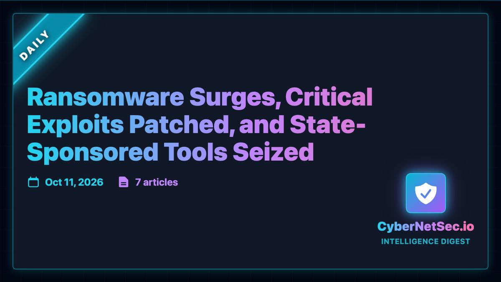

← Back to front pageCYBERSECURITYCyber Security
10 digest(s) · newest first
The cybersecurity landscape in October 2026 is defined by three converging trends: nation-state actors targeting critical infrastructure with increasing boldness, ransomware operations being dismantled through international cooperation but replaced by younger, faster-moving crews, and a federal government that is simultaneously issuing urgent vulnerability warnings while politically dismantling the oversight mechanisms meant to coordinate the response.
The Pentagon's Defense Manpower Data Center breach — exposing personal data of 3 million military personnel and veterans, including Social Security numbers and military records, ongoing since October 2025 and discovered in July 2026 — is the kind of incident that should reshape the conversation about defense contractor security. It didn't. North Korean state-sponsored hackers exploited third-party zero-day vulnerabilities to steal $387 million from the Bitget cryptocurrency exchange in the same week. International law enforcement dismantled the KillSec ransomware operation and arrested a 16-year-old administrator — proof that these crews are increasingly run by teenagers with impressive technical skills but fragile operational security.
CISA's Known Exploited Vulnerabilities catalog keeps growing. Three new additions this week: a Citrix NetScaler memory-corruption bug, two Zammad vulnerabilities involving session fixation and privilege management, and a FortiMail path traversal flaw. CISA also flagged CVE-2026-104935, a high-severity authentication bypass vulnerability in Ivanti Connect Secure being actively exploited as a zero-day since October 1. The agency added eight new NetScaler vulnerabilities, two already being exploited in the wild. The velocity of exploitation is outpacing the patching cycle, and the gap is where adversaries live.
What to watch: the Saudi national arrested by the FBI in October 2026 — Abdulrahman Alfozan, a 35-year-old OpenAI engineering lead — allegedly planted a sophisticated recording device in an executive conference room at OpenAI's San Francisco offices. This is an insider threat story that hasn't been fully told yet, and it sits at the intersection of AI company security, nation-state espionage, and the physical vulnerabilities of the people building the most powerful technology of the era.

 ▶Watch the video on YouTube
▶Watch the video on YouTube ▶Watch the video on YouTube
▶Watch the video on YouTubeDate saved: 2026-10-21 18:00 (PDT)
Sources: Krebs on Security, Aviatrix Threat Research Center, The Hacker News, CERT-EU, TechTarget, DW Documentary, IBM, CISA, FBI
Key findings
Pentagon DMDC breach: 3 million military personnel and veterans exposed
Week 40 of 2026 saw the Pentagon's Defense Manpower Data Center suffer a breach exposing personal data of 3 million military personnel and veterans, including Social Security numbers and military records. The breach was discovered in July 2026 but had been ongoing since October 2025. Attackers exploited zero-day vulnerabilities in third-party security appliances and Oracle PeopleSoft systems to gain initial network access. A zero-day vulnerability in Oracle PeopleSoft allows remote code execution through authentication bypass, enabling unauthorized access to sensitive data. (Source)
North Korean hackers steal $387 million from Bitget via zero-day exploit
North Korean state-sponsored hackers exploited third-party zero-day vulnerabilities to steal $387 million from the Bitget cryptocurrency exchange. The attackers exploited zero-day vulnerabilities in third-party security appliances and Oracle PeopleSoft systems to gain initial network access. This incident demonstrates the convergence of nation-state attacks targeting critical infrastructure and the evolving sophistication of cryptocurrency heists. (Source)
KillSec ransomware operation dismantled; 16-year-old arrested
International law enforcement successfully dismantled the KillSec ransomware operation, arresting key members including a 16-year-old administrator. Police in Spain arrested a 16-year-old on September 30 whom investigators suspect of running the KillSec ransomware group, which is accused of stealing data from organizations and threatening to publish it on its leak site unless they paid. Police also took control of the leak site. Three people were arrested total. The detail that a teenager was running a ransomware operation should unsettle anyone who assumes these operations are run by seasoned criminal syndicates. (Source)
CISA adds Citrix NetScaler, Zammad, FortiMail vulnerabilities to KEV catalog
CISA's Known Exploited Vulnerabilities catalog added three separate entries: a Citrix NetScaler memory-corruption bug, two Zammad vulnerabilities involving session fixation and privilege management, and a FortiMail path traversal flaw. CISA also flagged CVE-2026-104935, a high-severity authentication bypass vulnerability in Ivanti Connect Secure being actively exploited as a zero-day since October 1, 2026. CISA added eight new NetScaler vulnerabilities, two of which are already being exploited in the wild and were immediately added to the KEV catalog. (Source)
ShinyHunters suspect detained in Jordan, cooperating with FBI
A suspected member of the ShinyHunters digital extortion group, who goes by the online alias "Rey," was allegedly detained by authorities in Jordan on September 29, 2026. Rey, whose real name is Saif al-Din Khader, is said to be cooperating with the FBI and law enforcement to identify other members of the group. The arrest is tied to the investigation into ShinyHunters' breach of FBI data. Brian Krebs reported the development as one of the most significant ransomware enforcement actions of the year. (Source)
Qilin ransomware operative arrested and extradited to Germany
Japan confirmed the arrest and extradition of a Qilin ransomware operative to Germany. Qilin has been one of the more prolific ransomware-as-a-service operations in recent years. The arrest is a reminder that international cooperation against ransomware gangs, while slow, is producing real results — peeling off individual operatives chips away at the operational security these groups rely on. (Source)
OpenAI engineering lead arrested for planting recording device
In October 2026, Abdulrahman Alfozan, a 35-year-old Saudi national and OpenAI engineering lead, was arrested by the FBI for allegedly planting a sophisticated recording device in an executive conference room at OpenAI's San Francisco offices. The arrest raises questions about insider threats at AI companies and the physical security of the organizations building frontier AI systems. (Source)
U.S. Army soldier sentenced to 70 months for AT&T/Verizon breach
A U.S. Army soldier was sentenced to 70 months in prison for hacking into AT&T and Verizon systems and stealing metadata on more than 100 million customers. The case is a reminder that insider threats and compromised credentials remain a primary attack vector even in the age of sophisticated nation-state operations. (Source)
Conti ransomware operative sentenced to 4 years in U.S. prison
A Ukrainian national was sentenced to four years in a U.S. prison for his role in the Conti ransomware operation, which hit more than 1,000 victims before shutting down in 2022. The sentencing is part of a broader international enforcement push against ransomware operators that has seen arrests and extraditions across multiple jurisdictions. (Source)
Manchester Airports Group breach exposes 8.7 million customers
A breach at Manchester Airports Group exposed data belonging to 8.7 million customers, though the company says most of what was accessed was limited to email addresses. The breach adds to a growing list of large-scale data exposures affecting travel and transportation infrastructure. (Source)
Cisco FMC vulnerabilities exploited by ransomware and state-sponsored clusters
Cisco revealed that three distinct threat clusters linked to ransomware and state-sponsored attacks have been exploiting two recently patched Secure Firewall Management Center (FMC) vulnerabilities. The attacks leverage CVE-2026-20079 (CVSS score: 10.0), an authentication bypass vulnerability in the web interface of FMC software that could allow an unauthenticated, remote attacker to bypass authentication and execute script files on an affected device to obtain root access to the underlying operating system. The second flaw under exploitation is CVE-2026-20316 (CVSS score: 5.3). (Source)
Source links
The cybersecurity landscape this month has two separate stories that are converging into one larger problem. The first is the shift in how attackers get in: the 2026 Verizon Data Breach Investigations Report found that vulnerability exploitation has overtaken stolen credentials as the number-one initial access vector — 31% of breaches now start with an exploited vulnerability versus 13% via credential abuse, a complete flip from years of security orthodoxy that said "identity is the new perimeter." The median time-to-exploit for available vulnerabilities has collapsed from 21 days to 1.6 days. The second story is the ongoing campaign by China-linked Integrity Technology Group, whose tools the FBI and Justice Department seized in a joint action with allied nations — Microscan (a vulnerability scanner) and FishHub (a spear-phishing and data exfiltration tool) — after the group targeted critical infrastructure across North America, Southeast Asia, and Africa.
The throughline is that both trends point toward a defense problem that is getting harder faster: attackers are exploiting known vulnerabilities faster than organizations can patch them, and the nation-state actors are using commercially available tools and compromised VPN infrastructure to persist inside networks for long dwell times. IBM's 2026 Cost of a Data Breach report put the global average at $4.99 million — up 12% and an all-time high — with the U.S. figure at $11.5 million. AI-driven attacks rose 56% and added around a million dollars per breach. The Rhysida ransomware gang's claimed theft of 2.6TB from Anne Arundel County, Maryland — medical, payroll, and jail records, demanding $2 million — is a concrete example of what that looks like at the local government level.
What to watch next: the BeyondTrust zero-day (CVE-2026-102764) that CISA added to its Known Exploited Vulnerabilities catalog with confirmed active exploitation for initial access and lateral movement by a China-linked group; the Citrix NetScaler CVE-2026-107406 (CVSS 9.5, memory overflow leading to remote code execution); and whether the FBI's arrest of a Canadian cybersecurity expert in Pennsylvania linked to the FBIJobs.gov breach signals a broader law enforcement push against the ShinyHunters ecosystem.

 ▶Watch the video on YouTube
▶Watch the video on YouTube ▶Watch the video on YouTube
▶Watch the video on YouTubeDate saved: 2026-10-21 03:00 (PDT)
Sources: The Hacker News, CISA, FBI, Cyber.netsecops.io, Verizon DBIR, Sophos, IBM, SecurityWeek, Citrix, Palo Alto Networks, aviatrix.ai
Key findings
Ransomware surge and healthcare targeting
- A new report indicates a 64% surge in ransomware attacks against the U.S. healthcare sector in Q3 2026, with over 600,000 patient records compromised. (Source)
- The Rhysida ransomware gang claimed responsibility for an August 2026 cyberattack on Anne Arundel County, Maryland, alleging theft of 2.6TB of data including medical, payroll, and jail records, and demanding a $2 million ransom (25 BTC); the county has confirmed the data theft. (Source)
- A Semperis report indicates AI is exploited in 84% of ransomware attacks; a SecurityHQ/Datadog study highlights an "accountability gap" in AI governance creating new attack vectors. (Source)
- IBM's 2026 Cost of a Data Breach report put the global average at $4.99 million (up 12%, an all-time high); in the U.S. it is $11.5 million; ransomware hit 39% of breached organizations, up from 24% in 2023; threatening brand reputation is now the most common pressure tactic at 41%, ahead of encrypting data at 23%. (Source)
Nation-state campaigns and tool seizures
- The FBI and Justice Department, with allied nations, seized two hacking tools — "Microscan" (a vulnerability scanner) and "FishHub" (a spear-phishing and data exfiltration tool) — used by the China-linked Integrity Technology Group, which has targeted critical infrastructure globally; a joint advisory expanded the identified target regions to North America, Southeast Asia, and Africa. (Source)
- CISA added CVE-2026-102764, a critical authentication bypass in BeyondTrust Remote Support, to its Known Exploited Vulnerabilities catalog with confirmed active exploitation for initial access and lateral movement by a China-linked group, mandating immediate patching for FCEB agencies. (Source)
- The Russia-linked APT28 (aka BlueDelta, Fancy Bear, Forest Blizzard) has been attributed to attacks targeting two NATO member states, including a breach of a NATO naval shipbuilder. (Source)
- A joint advisory from CISA, FBI, NSA, and allied nations highlighted the global threat posed by China-based Integrity Technology Group, detailing new TTPs employed by threat actors like Flax Typhoon, including Living-off-the-Land techniques and use of compromised VPN infrastructure for persistence. (Source)
Major breaches and vulnerabilities
- Denmark's Central Register of Persons (CPR) breach exposed 8.8 million records including names, addresses, and national ID numbers, caused by a compromise at a private third-party supplier; Check Point Research reconfirmed the scale on October 12. (Source)
- The Pentagon's Defense Manpower Data Center suffered a breach exposing personal data of 3 million military personnel and veterans, including Social Security numbers and military records, discovered in July 2026 but ongoing since October 2025. (Source)
- Osaka Metropolitan University in Japan was hit by a major suspected ransomware attack impacting approximately 500 servers and affecting the personal data of at least 130,000 students, faculty, and staff. (Source)
- Japanese karaoke giant Daiichi Kosho announced a major data breach originating from a third-party supplier, Nippon Columbia Group, caused by malware on a supplier employee's PC, potentially exposing personal information of approximately 8.7 million customers. (Source)
- Warlock ransomware group is confirmed to have targeted at least four U.S. critical infrastructure organizations — including water utilities and telecommunications — using old SharePoint vulnerabilities (ToolShell). (Source)
- Qilin and INC ransomware groups are exploiting a now-patched Palo Alto Networks flaw (CVE-2026-0257, CVSS 7.8) to bypass MFA and set up unauthorized VPN connections; the flaw was patched in May 2026 and added to CISA's KEV catalog on May 13. (Source)
- Citrix released a security advisory for CVE-2026-107406, a critical memory overflow vulnerability (CVSS 9.5) in NetScaler ADC and Gateway products that could lead to remote code execution or denial of service; exploitation attempts now include shellcode indicating active pursuit of RCE. (Source)
Verizon DBIR 2026: the structural shift
- The 2026 Verizon Data Breach Investigations Report found vulnerability exploitation jumped to 31% of initial access while credential abuse dropped to just 13%, completely flipping years of security thinking; the median time-to-exploit for available vulnerabilities dropped from 21 days to 1.6 days; ransomware was involved in 48% of confirmed breaches, up from 44%. (Source)
- The DBIR analyzed over 22,000 confirmed breaches; organizations had 50% more critical vulnerabilities to patch this year, and median remediation time increased from 32 to 43 days despite initially getting faster at patching. (Source)
Source links
The cybersecurity landscape in October 2026 has two overlapping emergencies. The first is the continuing weaponization of zero-day vulnerabilities by ransomware groups — a blurring of the line between nation-state and criminal capability that Datapath and Cybersecurity Daily have both tracked this quarter. Microsoft's September Patch Tuesday was the largest on record at 421 security flaws, including one in the Windows afd.sys kernel driver already being actively exploited before the patch was available. The second is a healthcare sector under sustained siege: Comparitech found ransomware attacks targeting U.S. healthcare jumped 64% in Q3 2026 versus Q2, and the Verizon DBIR found ransomware now appears in 48% of all data breaches — a record high.
The Pentagon's Defense Manpower Data Center breach, discovered in July 2026 but ongoing since October 2025, exposed personal data of 3 million military personnel and veterans including Social Security numbers and military records. That breach, combined with the Bitget crypto heist ($387 million stolen by North Korean state-sponsored hackers exploiting third-party zero-days) and the KillSec ransomware takedown (international law enforcement dismantled the operation, arresting a 16-year-old administrator), illustrates how the threat landscape now spans criminal extortion, nation-state theft, and younger, more accessible cybercriminal tooling.
What to watch next: whether the 18-nation NSA-led advisory on Russian FSB Center 16's exploitation of an eight-year-old Cisco Smart Install vulnerability (CVE-2018-0171) produces coordinated disruption, and whether the TSYS repeat ransomware hit (Everest group, second time in five years) triggers systemic-payment-infrastructure scrutiny.
▶Watch the video on YouTube  ▶Watch the video on YouTube
▶Watch the video on YouTubeDate saved: 2026-10-20 23:15 (PDT)
Sources: Cybersecurity Daily, Aviatrix, The Hacker News, Datapath, Beckers Hospital Review, DW Documentary, Verizon DBIR
Key findings
Pentagon DMDC breach exposed 3 million records
Aviatrix reported that the Pentagon's Defense Manpower Data Center suffered a breach exposing personal data of 3 million military personnel and veterans — including Social Security numbers and military records — discovered in July 2026 but ongoing since October 2025. The exposure resulted from unencrypted data storage and inadequate access controls. (Aviatrix Threat Research Center)
North Korea steals $387 million from Bitget
Aviatrix reported that North Korean state-sponsored hackers exploited third-party zero-day vulnerabilities to steal $387 million from the Bitget cryptocurrency exchange. The attackers compromised Bitget's wallet infrastructure, escalated privileges through harvested credentials, moved laterally to production systems, and maintained persistent command-and-control through web shells. (Aviatrix)
Healthcare ransomware jumps 64% in a single quarter
Becker's Hospital Review reported that ransomware attacks and unverified claims targeting U.S. healthcare organizations increased 64% in Q3 2026 from Q2, per an October 15 Comparitech report. The U.S. accounted for 185 of 306 healthcare ransomware incidents tracked worldwide between July and September. Globally, healthcare ransomware incidents more than doubled from 151 during the same period in 2025. Saber Healthcare Group had the largest reported breach, affecting 427,084 people. (Becker's Hospital Review)
Verizon DBIR: ransomware in 48% of all breaches
DeepStrike reported that the Verizon DBIR 2026 found ransomware appears in 48% of all data breaches — a record high — and that 31% of breaches now start with software vulnerability exploitation, overtaking stolen credentials as the top entry point. Public-sector ransomware attacks rose 65% year-over-year in the first half of 2026 (208 confirmed incidents). (DeepStrike)
Microsoft's record Patch Tuesday and active exploitation
Datapath reported that Microsoft fixed 421 security flaws in September 2026 — the largest Patch Tuesday ever recorded — including a flaw in the afd.sys kernel driver already being actively exploited by criminals before the fix was available. That flaw allowed an attacker with limited access to escalate privileges to full SYSTEM-level control. In August, Zoom patched a zero-click remote code execution vulnerability allowing complete computer takeover during a Zoom session without any user action. (Datapath)
Russian state actors exploiting old Cisco vulnerability
Cybersecurity Daily reported that an 18-nation advisory led by the NSA details sustained Russian FSB Center 16 exploitation of CVE-2018-0171, an eight-year-old Cisco Smart Install vulnerability. Separately, Palo Alto Networks disclosed ongoing exploitation of CVE-2026-0257 (CVSS 7.8), an authentication bypass in PAN-OS and Prisma Access by ransomware actors, and Cisco revealed three threat clusters — ransomware and state-sponsored — exploiting CVE-2026-20079 (CVSS 10.0), an authentication bypass in Secure Firewall Management Center that grants root access. (Cybersecurity Daily)
KillSec ransomware dismantled, 16-year-old arrested
Aviatrix reported that international law enforcement successfully dismantled the KillSec ransomware operation, arresting key members including a 16-year-old administrator. The operation demonstrated increasing involvement of younger cybercriminals in ransomware operations and the growing possibility of international cooperation against ransomware groups. (Aviatrix)
Source links
Date saved: 2026-10-20 18:00 (PDT)
Sources: Verdice News, Aviatrix Threat Research Center, The Hacker News, SentinelOne, CISA, Europol, CoinDesk, Defense.gov, BleepingComputer
Key findings
Pentagon DMDC breach: 3 million military records exposed
- Aviatrix Threat Research Center / Defense.gov (Week 40, 2026): The Pentagon's Defense Manpower Data Center (DMDC) suffered a breach exposing personal data of 3.09 million military personnel and veterans — including 2.8 million living and 294,000 deceased service members. Exposed data includes Social Security numbers, names, birthdates, contact details, race, gender, and military assignment records. The breach was discovered in July 2026 but was ongoing since October 2025. Notification was issued via Defense.gov Release Article 3598234. The exposure was attributed to unencrypted data storage and inadequate access controls. The breach also affected FBI recruitment platform administrative records and special agent personal data. (Source)
North Korean $387M cryptocurrency heist
- Aviatrix / CoinDesk (Oct 15, 2026): North Korean state-sponsored hackers exploited third-party zero-day vulnerabilities to steal $387 million from Bitget cryptocurrency exchange. The attack path: exploitation of zero-day vulnerabilities in third-party security appliances and Oracle PeopleSoft systems for initial access, privilege escalation through harvested credentials, lateral movement to production systems, persistent C2 via web shells, and exfiltration of $387M in cryptocurrency. CVE-2024-47575 (CVSS 9.8) — a zero-day in Oracle PeopleSoft allowing remote code execution through authentication bypass — was exploited in the wild. (Source)
KillSec ransomware takedown and teen arrests
- Europol / The Hacker News / Aviatrix: International law enforcement successfully dismantled the KillSec ransomware operation, arresting key members including a 16-year-old administrator. Police in Spain arrested the 16-year-old, who was one of three people arrested on September 30, 2026, when police also took control of KillSec's leak site. KillSec was accused of stealing data from organizations and threatening to publish it unless ransom was paid. Operation KillSwitch was the coordinated law enforcement action. (Source)
- The Hacker News: A suspected member of the ShinyHunters digital extortion group, "Rey" (real name Saif al-Din Khader), was detained by authorities in Jordan on September 29, 2026, and is cooperating with the FBI and law enforcement to identify other group members. (Source)
Verizon/CISA Ivanti zero-day warning
- CISA: Issued an urgent warning about CVE-2026-104935, a high-severity authentication bypass vulnerability in Ivanti Connect Secure (ICS), being actively exploited as a zero-day since October 1, 2026. (Source)
Cisco Secure Firewall vulnerabilities actively exploited
- Cisco / The Hacker News: Three distinct threat clusters linked to ransomware and state-sponsored attacks are exploiting two recently patched Secure Firewall Management Center (FMC) vulnerabilities. CVE-2026-20079 (CVSS 10.0) is an authentication bypass vulnerability in the FMC web interface allowing unauthenticated remote attackers to execute script files and obtain root access. CVE-2026-20316 (CVSS 5.3) allows unauthenticated remote attackers to log in using a low-privilege account to access sensitive data. (Source)
Broader threat landscape — identity attacks dominate
- Verdice News (July 27, 2026 intelligence briefing): The center of gravity in cyber threats has shifted from technical exploitation to identity compromise and AI-enabled deception. The dominant lesson of 2026 incident data: "attackers did not break in; they logged in" — credential theft, SSO token phishing, and inherited vendor access drive nearly every major intrusion. 87% of CEOs identify AI-related vulnerabilities as the fastest-growing cyber risk (Global Cybersecurity Outlook 2026, Amtivo). Government ransomware incidents reached 187 in H1 2026, a 13% global increase, with "The Gentleman" the most active group. The Colonial Pipeline lesson — a single inactive account without MFA enabled a national crisis — remains largely unlearned across operational technology environments. (Source)
- ShinyHunters group: Responsible for the January 2026 Match breach and the June 2026 NAIC (National Association of Insurance Commissioners) credit-rating compromise that forced suspension of investment-risk designations. FBI recruitment platform was breached by ShinyHunters. (Source)
- Nation-state blurring: CSIS documented the June 2026 Tata Electronics breach implicating Apple and Tesla data, with Russia's FSB responding by opening a criminal investigation but providing no technical evidence or specific country attribution — illustrating how state agencies use attribution claims as narrative instruments. (Source)
- 14 charged in cybercrime schemes: Authorities arrested two U.S. nationals and charged 14 individuals total, including 12 Chinese defendants, in schemes affecting over 70 companies and generating approximately $3 million since 2019. (Source)
Source links
Date saved: 2026-10-20 11:00 (PDT)
Sources: SecurityWeek, Nextgov, BleepingComputer, The Hacker News, CISA
The Defense Manpower Data Center kept unencrypted Social Security numbers, dates of birth and military records for roughly 3 million people on a file-sharing server that unauthorized users could reach — and nobody inside the Pentagon noticed for about nine months. Access began in October 2025. The vulnerability was found on July 16, 2026 (SecurityWeek).
The people affected found out from a notification letter dated September 18, signed by DMDC Director Katie Griffin, not from any public announcement; Nextgov obtained the letter, and Military Times first reported it on September 24. The exposed population is 2.76 million living people and 294,000 deceased individuals, a defense official told CNN (SecurityWeek).
Nine months of unencrypted records
The data varied by person but could include Social Security numbers, names, dates of birth, contact details, demographic data and military occupational specialties — all stored unencrypted on a server inside an agency that holds more than 60 million records and helps manage identity for military personnel, government employees and contractors (BleepingComputer).
DMDC patched the flaw and restored the system after discovery, and is offering 12 months of free credit monitoring and identity restoration through IDX, with enrollment closing August 19, 2027 (BleepingComputer). The letter says the department has no indication the information has been misused.
The patch treadmill — and who it does not bind
The same pattern runs through this month's vulnerability disclosures. Cisco's Secure Firewall Management Center bugs are being exploited by three distinct threat clusters: one deploying JSP web shells to harvest credentials (UAT-12197), one carrying a variant of the Sandworm-linked Cyclops Blink implant (UAT-11823), and one using the low-privilege flaw for initial access before deploying Qilin ransomware (UAT-11988) (The Hacker News, September 11). The FMC is the console administrators use to configure the firewalls themselves: in each case the device whose job is watching the network was the way in.
CVE-2026-20079 scores a maximum 10.0 and hands an unauthenticated remote attacker root access (NVD). Cisco first published the advisory on March 4, 2026, and only revised it on September 9 to say active exploitation had been observed since August (Severity Daily). CISA added it to the Known Exploited Vulnerabilities catalog the same day with a three-day deadline of September 12 — a deadline that binds federal agencies only (CISA KEV catalog). Its partner flaw, CVE-2026-20316, had already been added in late July. Everyone outside the federal estate patches on Cisco's timetable, not CISA's.
Kept adding since: a FortiMail path traversal bug, CVE-2026-104286 (October 1), two Zammad flaws, CVE-2026-102489 and CVE-2026-102490 (October 2), and a Citrix NetScaler bug, CVE-2026-88779 (October 4) (weekly KEV update).
What the official story leaves out
"At this time, DoW does not have any indications of misuse of the accessed information" is a statement by the agency that failed to detect the access for nine months (SecurityWeek). A notification letter cannot see criminal use of Social Security numbers traded outside its systems, and credit monitoring detects fraud after it is already underway rather than preventing it.
Likewise, DMDC's assurance that it followed Office of Management and Budget and department guidelines describes a checklist, not an outcome: every control it complied with was in place while the exposure ran from October 2025 to July 2026. And the binding deadlines in this story apply to federal agencies. Everyone else — hospitals, schools, the businesses that hold your records — depends on a vendor deciding when to tell you, as Cisco's six-month gap between advisory and exploitation notice shows.
What readers can do
- If you served, or are a military family member: find the DMDC letter dated September 18 and enroll in the IDX monitoring offer before August 19, 2027 — the window closes whether or not you have seen fraud yet.
- Freeze your credit with all three bureaus using the FTC's steps at identitytheft.gov; a freeze stops new accounts being opened in your name, which monitoring does not.
- Request an IRS Identity Protection PIN at irs.gov — an SSN alone is no longer enough to file a fraudulent return in your name.
- If you run a Cisco Secure FMC: apply the hotfixes for CVE-2026-20079 and CVE-2026-20316 now. Cisco states there are no workarounds (Cisco advisory).
- If you run FortiMail, Zammad or Citrix NetScaler: check the KEV catalog against your inventory; those three additions are from the first week of October.
Source links

Date saved: 2026-10-20 03:00 (PDT)
Sources: The Hacker News, Aviatrix Threat Research, Krebs on Security, Cisco, Reuters
Key findings
KillSec ransomware takedown and arrests
- The Hacker News (September 30, 2026): Police in Spain arrested a 16-year-old suspected of running the KillSec ransomware group, one of three people arrested when police also took control of KillSec's leak site. KillSec is accused of stealing data from organizations and threatening to publish it unless they paid. In a separate development, a suspected member of the ShinyHunters digital extortion group known as "Rey" (real name Saif al-Din Khader) was detained in Jordan on September 29 and is cooperating with US authorities. (Source)
Pentagon DMDC breach — 3 million records exposed
- Aviatrix Threat Research (Week 40, 2026): The Pentagon's Defense Manpower Data Center suffered a breach exposing personal data of 3 million military personnel and veterans, including Social Security numbers and military records. The breach was discovered in July 2026 but has been ongoing since October 2025 — a full year of exposure. Simultaneously, North Korean state-sponsored hackers exploited third-party zero-day vulnerabilities to steal $387 million from the Bitget cryptocurrency exchange. (Source)
Cisco firewall vulnerabilities being actively exploited
- The Hacker News (2026): Cisco revealed that three distinct threat clusters linked to ransomware and state-sponsored attacks are exploiting two recently patched Secure Firewall Management Center (FMC) vulnerabilities. CVE-2026-20079 (CVSS 10.0) is an authentication bypass vulnerability allowing unauthenticated remote attackers to execute script files and obtain root access. CVE-2026-20316 (CVSS 5.3) allows low-privilege account login to access sensitive data. Multiple espionage-motivated threat clusters have also been found deploying a previously undocumented exploit kit called BlueMoon that chains vulnerabilities in Microsoft Windows and Google Chrome. (Source)
Ransomware negotiation fraud and international crackdowns
- Krebs on Security (2026): Brian Krebs reported the arrest of a ransomware negotiation firm's founder, tied to the investigation into ShinyHunters' breach of FBI data. Japan confirmed the arrest and extradition of a Qilin ransomware operative to Germany — a rare example of international cooperation against ransomware gangs. An Iranian national accused of breaching American universities to steal academic data and IP was extradited from Montenegro. A US Army soldier was sentenced to 70 months for hacking into AT&T and Verizon systems and stealing metadata on more than 100 million customers. (Source)
- Cisco / The Hacker News (2026): The international seizure of tools used by Integrity Tech, the firm behind the Flax Typhoon campaign, represents a notable multinational effort to disrupt Chinese state-linked hacking infrastructure. CISA's Known Exploited Vulnerabilities catalog added three entries: a Citrix NetScaler memory-corruption bug, two Zammad vulnerabilities (session fixation and privilege management), and a FortiMail path traversal flaw. (Source)
Source links

Date saved: 2026-10-19 18:00 (PDT)
Sources: Senthorus, IT Security News, Aviatrix, CyberBreachNet, TechTarget
Key findings
Major Data Breaches
- Senthorus (Oct 5–11, 2026): The US Department of Defense's Defense Manpower Data Center (DMDC) confirmed a massive breach affecting over 3 million military personnel and veterans. Unauthorized users accessed unencrypted personnel records via a file-sharing vulnerability between October 2025 and July 2026, exposing names, Social Security numbers, birth dates, contact details, and military occupational information. (Source)
- Senthorus (Oct 5–11, 2026): Japanese car-sharing service Times Car disclosed a breach impacting 6.6 million accounts, with identity-verification documents including driver's licenses leaked for 1.6 million users. Fakturownia, a Polish online invoicing platform used by over 600,000 businesses, suffered a breach exposing account and company information, password hashes, bank account details, and authentication tokens. Arizona's state court system was compromised after an employee clicked a malicious link, exposing backup files containing protective-order records and over 150,000 Foster Care Review Board reports. (Source)
- IT Security News (Oct 15, 2026): Eight major 2026 data breaches have affected organizations including Medtronic, Canvas, and DentaQuest, demonstrating continuous vulnerability of sensitive healthcare records. Retailer TFG London experienced a cyber incident forcing several IT systems offline and disrupting online orders across brands like Hobbs and Whistles. (Source)
Critical Vulnerabilities & Zero-Days
- IT Security News (Oct 15, 2026): CISA issued an urgent warning about CVE-2026-104935, a high-severity authentication bypass vulnerability in Ivanti Connect Secure being actively exploited as a zero-day since October 1, 2026. Microsoft released a record 1,415 security fixes in its October update, addressing actively exploited zero-days and critical remote code execution bugs. A critical Linux kernel bug dubbed PwnEscape allows virtual machine guests to read host memory, bypassing core hypervisor isolation boundaries. (Source)
- CyberBreachNet (Oct 19, 2026): A Broadcom Wi-Fi flaw dating back to 2010 allows attackers within Wi-Fi range to execute code on vulnerable routers without authentication. A Rust-based bot named CikaBika turns Discord into a command center — using fake documents to infect Windows systems, then abusing Discord and Ngrok to execute commands, spy on victims, and steal files. (Source)
- TechTarget (Oct 2026): An AI audit of Curl unearthed a 25-year-old authentication flaw in code powering 20 billion devices, proving heavily scrutinized legacy libraries still harbor hidden risks. CISA added actively exploited flaws in Palo Alto Networks PAN-OS, Ahsay AhsayCBS, and Cisco Secure Email Gateway to its Known Exploited Vulnerabilities catalog. (Source)
Ransomware, Nation-State Attacks & Arrests
- Aviatrix (Oct 2026): North Korean state-sponsored hackers exploited third-party zero-day vulnerabilities to steal $387 million from the Bitget cryptocurrency exchange. International law enforcement dismantled the KillSec ransomware operation, arresting key members including a 16-year-old administrator. CISA added five security flaws exploited by the China-linked Flax Typhoon group to its KEV catalog, requiring federal agencies to patch or discontinue affected software by October 11. (Source)
- Senthorus (Oct 5–11, 2026): South Africa's air navigation provider was hit by ransomware, disrupting operational technology supporting aviation weather services. Citrix issued urgent patches for critical NetScaler vulnerabilities (CVE-2026-88771, CVE-2026-88772) actively exploited in the wild — attackers leveraged these flaws to gain remote access, deploy web shells, steal credentials, and move laterally. The FBI arrested a suspected co-conspirator of the ShinyHunters extortion group, which had claimed responsibility for high-profile breaches including the FBI's jobs portal. (Source)
- IT Security News (Oct 15, 2026): Cisco disclosed a critical authentication bypass vulnerability (CVSS 9.8) in Catalyst SD-WAN Manager allowing unauthenticated remote attackers to gain administrator access with active exploitation reported but no patch available. Apple released emergency patches for a CoreGraphics memory corruption vulnerability exploited in targeted attacks. Fortinet disclosed active exploitation of a critical FortiMail vulnerability (CVSS 9.8). Cisco Talos and Recorded Future exposed Silent Lynx, a Kazakhstan-nexus threat group conducting cyber espionage against Russian energy and government sectors. (Source)
Source links

Date saved: 2026-10-19 03:00 (PDT)
Sources: Aviatrix Threat Research Center, The Hacker News, Security Boulevard, FBI, CISA, Google Mandiant
Key findings
Pentagon DMDC breach — 3 million military records exposed
- Aviatrix Threat Research Center (2026): The Pentagon's Defense Manpower Data Center (DMDC) suffered a breach exposing personal data of 3 million military personnel and veterans, including Social Security numbers and military records. The breach was discovered in July 2026 but has been ongoing since October 2025. The exposure was attributed to unencrypted data storage and inadequate access controls. (Source)
North Korean heist and ransomware takedown
- Aviatrix / The Hacker News (2026): North Korean state-sponsored hackers exploited third-party zero-day vulnerabilities to steal $387 million from the Bitget cryptocurrency exchange, escalating privileges through harvested credentials and maintaining persistent C2 through web shells. Simultaneously, international law enforcement successfully dismantled the KillSec ransomware operation, arresting key members including a 16-year-old administrator in Spain. Police in Spain arrested the suspected administrator and main operator of KillSec on September 30, taking control of the group's leak site and servers. KillSec is accused of stealing data from organizations and threatening to publish it unless they paid. (Source)
- The Hacker News (October 1, 2026): The 16-year-old arrested in Spain was identified by Hamburg police as KillSec's suspected administrator and main operator. He was one of three people arrested. (Source)
CISA zero-day warning — Ivanti Connect Secure
- The Hacker News (2026): The U.S. Cybersecurity and Infrastructure Security Agency (CISA) issued an urgent warning about CVE-2026-104935, a high-severity authentication bypass vulnerability in Ivanti Connect Secure (ICS) being actively exploited as a zero-day since October 1, 2026. The flaw (CVSS score: 8.6) impacts ICS versions 25.1.1.1 and prior, 25.1.2.2 and prior, and 22.8R2.4 and prior, allowing a remote unauthenticated attacker to execute arbitrary commands. CISA added the flaw to its Known Exploited Vulnerabilities catalog, requiring Federal Civilian Executive Branch agencies to apply fixes by October 16, 2026. The agency said cyber threat actors are exploiting the zero-day "to conduct credential theft and data exfiltration." (Source)
FBI operations and ShinyHunters arrests
- Aviatrix (2026): In October 2026, the FBI conducted Operation Lonestar Roundup, raiding 40 residences in Texas and seizing 187 laptops used by North Korean threat group Famous Chollima (WageMole) in fraudulent IT worker schemes. Authorities arrested two U.S. nationals and charged 14 individuals total, including 12 Chinese defendants, in schemes that affected over 70 companies and generated approximately $3 million since 2019. In a separate case, Abdulrahman Alfozan, a 35-year-old Saudi national and OpenAI engineering lead, was arrested by the FBI for allegedly planting a sophisticated recording device in an executive conference room at OpenAI's San Francisco offices. (Source)
- Security Boulevard (October 2026): The FBI arrested Canadian cybersecurity expert Edward Dubrovsky, accusing him of conspiring with ShinyHunters in the breach of the agency's systems. The attack exposed sensitive information of thousands of FBI employees, including job details, specializations, and medical records, after hackers exploited an unpatched Oracle PeopleSoft vulnerability (CVE-2026-35273). ShinyHunters, a prolific extortion group, has breached more than 140 organizations since 2025 and extorted $70 million. Dubrovsky was arrested at a cybersecurity conference in Pennsylvania and is being charged in Texas with conspiracy to commit extortion. The FBI has also arrested other ShinyHunters associates including a Canadian citizen in Pennsylvania, Pepijn Van der Stap in the Netherlands, and teenager Saif al-Din Khader ("Rey") in Jordan, who is cooperating with law enforcement. (Source)
China-linked espionage and HAFNIUM rewards
- The Hacker News (2026): Hackers tied to a Chinese cybersecurity company stole email from government organizations, law enforcement agencies, healthcare systems, and religious institutions in Southeast Asia, the FBI and agencies in six other countries said on October 8. The U.S. State Department is offering up to $10 million for information leading to the identification or location of Zhang Yu, a Chinese national charged in connection with the 2021 Microsoft Exchange Server attacks known as HAFNIUM. Zhang remains at large. (Source)
- The Hacker News (October 9, 2026): FBI Director Kash Patel announced the arrest of another suspected co-conspirator of ShinyHunters, a Canadian citizen arrested in Pennsylvania. (Source)
Source links

 ▶Watch the video on YouTube
▶Watch the video on YouTubeDate saved: 2026-10-18 18:00 (PDT)
Sources: Aviatrix Threat Research Center, The Hacker News, SentinelOne, BleepingComputer, Europol, CoinDesk, Department of Defense
Key findings
Pentagon DMDC breach exposes 3 million records
- Aviatrix Threat Research Center (Oct 15, 2026): The Pentagon's Defense Manpower Data Center (DMDC) suffered a breach exposing personal data of 3 million military personnel and veterans, including Social Security numbers, names, birthdates, contact details, race, gender, and military assignment records. The breach affected 2.8 million living and 294,000 deceased service members. It was discovered in July 2026 but has been ongoing since October 2025. The exposure resulted from unencrypted data storage and inadequate access controls. An additional FBI recruitment platform was also compromised, exposing special agent personal data. (Source)
North Korean $387M cryptocurrency heist
- Aviatrix Threat Research Center (Oct 15, 2026): North Korean state-sponsored hackers (DPRK APT) exploited third-party zero-day vulnerabilities in security appliances and Oracle PeopleSoft systems (CVE-2024-47575, CVSS 9.8) to compromise Bitget cryptocurrency exchange's wallet infrastructure. Attackers escalated privileges through harvested credentials, moved laterally to production systems, maintained persistent command-and-control through web shells, and exfiltrated $387 million in cryptocurrency. The attack demonstrated sophisticated supply chain exploitation through third-party vulnerabilities. (Source)
- CoinDesk (Oct 15, 2026): Bitget exchange suffered a $387 million cryptocurrency heist, with North Korean actors suspected. The breach occurred through zero-day vulnerabilities in third-party security infrastructure. (Source)
KillSec ransomware dismantled, 16-year-old arrested
- Aviatrix / Europol (Oct 2026): International law enforcement successfully dismantled the KillSec ransomware operation under "Operation KillSwitch," arresting key members including a 16-year-old administrator. Police in Spain arrested the teenager on September 30, 2026, along with two others, and took control of KillSec's leak site. KillSec was accused of stealing data from organizations and threatening to publish it unless ransom was paid. (Source)
- The Hacker News (Sep 2026): Police in Spain arrested a 16-year-old suspected of running the KillSec ransomware group. The 16-year-old was one of three people arrested on September 30 when police also took control of the group's leak site. (Source)
ShinyHunters suspect detained in Jordan
- The Hacker News / Reuters (Sep 2026): A suspected member of the ShinyHunters digital extortion group, known by the alias "Rey" (real name Saif al-Din Khader), was detained by authorities in Jordan on September 29, 2026, and is cooperating with the FBI and law enforcement to identify other group members. (Source)
Ransomware fraud charges and other arrests
- The Hacker News (2026): The US Department of Justice charged Zohar Pinhasi (aka Zack Silver/Zack Green), a 50-year-old US and Israeli national, with two counts of wire fraud and one count of wire fraud conspiracy for allegedly defrauding ransomware victims by secretly paying attackers to obtain decryptors while claiming to use proprietary tools. (Source)
Nation-state threats and US responses
- The Hacker News (2026): The US DOJ charged 14 people and seized about 187 computers and KVM devices as part of efforts to disrupt North Korea's fraudulent remote IT worker scheme, affecting more than 70 US companies. The State Department is offering up to $10 million for information leading to Zhang Yu, a Chinese national charged in connection with the 2021 Microsoft Exchange Server attacks (HAFNIUM). The Salt Typhoon Chinese state-sponsored threat group continues to target critical organizations despite remediation of last year's telecom breaches. Cisco revealed that three distinct threat clusters linked to ransomware and state-sponsored attacks are exploiting two recently patched Secure Firewall Management Center (FMC) vulnerabilities. (Source)
- BleepingComputer (2026): The FBI recruitment platform was breached by the ShinyHunters group. The Pentagon DMDC breach notification was formally released by the Defense Department. (Source)
Vulnerabilities and zero-days
- Aviatrix (Oct 2026): Palo Alto Networks disclosed CVE-2026-0322, a high-severity remote code execution vulnerability in PAN-OS management interface enabling authenticated attackers to execute arbitrary code with root privileges. A zero-day vulnerability in Cleo's managed file transfer products is being exploited. A vulnerability called "SneakPeek" exposes critical AI development tool security gaps in Anthropic's Claude Code desktop. (Source)
Source links

Date saved: 2026-10-18 14:33 (PDT)
Sources: The Hacker News, BleepingComputer, Infosecurity Magazine, Cyber Security News
Ransomware
- Q3 2026 set a new record: Comparitech counted 2,627 claimed ransomware attacks in Q3 2026 — finance, technology, education, healthcare saw significant increases (Oct 9).
- Physical violence threats rising: Ransomware gangs increasingly threaten employees, executives, and their families to force payment — beyond file encryption and data theft (Infosecurity, Oct 16). (Source)
- Silent Ransom Group: Leaked chat logs suggest $206.95M extorted from 27 firms in ~6 months without encrypting files (Oct 9).
- MonsterCloud CEO charged (Oct 8): DOJ charged Zohar Pinhasi with wire fraud for billing victims $19M+ while secretly paying attackers for decryptors, claiming proprietary recovery tools.
- Backup targeting: Ransomware groups increasingly target backup infrastructure to eliminate recovery options (Kaseya advisory).
Major breaches / incidents
- FBI / ShinyHunters crackdown: Group claimed a breach of the FBI jobs portal (data on nearly all agents/applicants). Multiple arrests: a Canadian cybersecurity executive (Edward Dubrovsky) arrested in Pennsylvania; suspect "Rey" detained in Jordan, cooperating with FBI; Dutch police arrested an alleged leader; FBI Director Kash Patel urging members to surrender. ShinyHunters also allegedly hacked Clop's own leak site, defacing it and stealing onion service private keys.
- KillSec dismantled — "Operation KillSwitch": International operation seized leak site/servers, 3 arrests; alleged admin is a 16-year-old arrested in Spain.
- Berlin state government: Confirmed extortion attempt (Rhysida gang listed it) after August compromise of the state administrative network; refuses to pay.
- Japan: Ransomware hit IDCF Cloud (IDC Frontier) — data center outage affecting east Japan; Keio Corporation railway hit; Daiichi Kosho karaoke chain breach exposed 8M+ customers (supply chain).
- UK Legal Aid Agency: Hackers stole records dating back to 1978 (April 2025 breach disclosed Oct 15, 2026).
- KFC named in Gentlemen ransomware group's breach claim (Oct 10).
- Advantest (semiconductor test firm) confirming PII stolen in ransomware attack.
- ASOS data breach linked to stolen employee credentials (Oct 8).
Threats / vulnerabilities
- FortiBleed (FBI warning): Ongoing attacks on exposed Fortinet FortiGate firewalls & SSL VPN gateways locking out legitimate admins.
- Palo Alto GlobalProtect CVE-2026-0257: Months-old auth-bypass flaw in PAN-OS GlobalProtect/Prisma Access actively exploited by multiple ransomware groups for stealthy VPN access (ReliaQuest).
- China-nexus attacks: Actor exploiting Microsoft SharePoint flaws to deploy Warlock ransomware against essential services/public sector; Chinese hacker used AI in a campaign against South Korean banks; UK + allies warned of cyber threat from China's Integrity Technology Group.
- Kimsuky deploying Funhouse ransomware via malicious résumé documents.
- ClickFix + Python tunnels used to stage systems for ransomware (Oct 15).
- Aoki Infostealer targeting AI coding assistant credentials (Oct 15); separately, a ransomware affiliate used an AI coding assistant as an attack channel inside enterprise networks (Oct 6).
- Microsoft disrupted the "Yam" phishing network — one billion phishing messages (Oct 15).
- Luna Moth leaks shed light on ransomware group internals (Oct 12).
Policy / other
- G7: Planning tabletop exercises simulating AI cyberattacks on banks.
- New Aoki Infostealer and Socradar's new white-label threat-intel API suite for MSSPs (industry note).
Source links
// Get the brief by email
Twice-daily briefs — the same sourced reporting, in your inbox the moment it’s published. No ads, no trackers, one-click unsubscribe.
The email edition opens shortly — until then the RSS feed lands every brief the moment it’s published.
// Donate
If this brief is worth something to you, scan with your Zelle app.
Tap the code to open it full size.